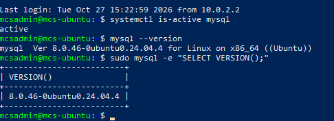
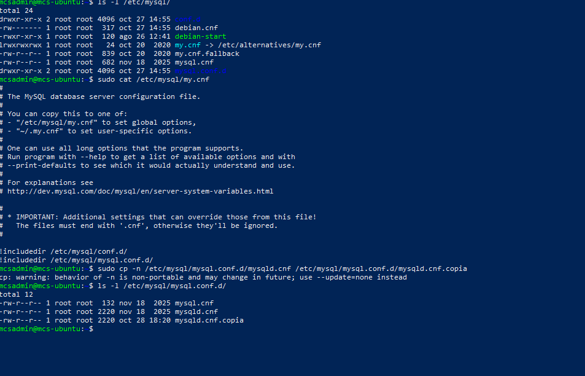
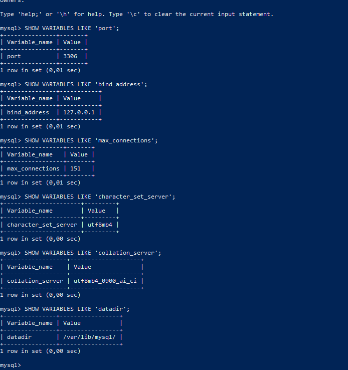
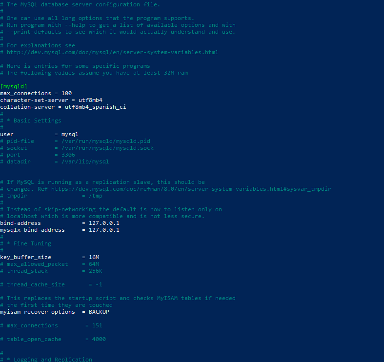
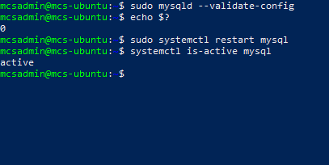
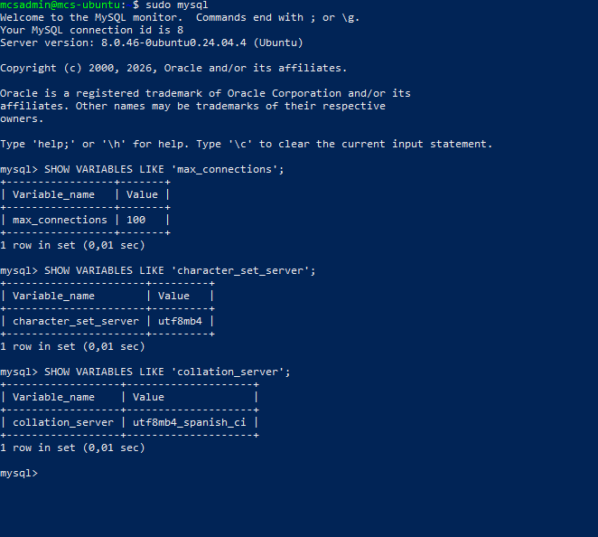
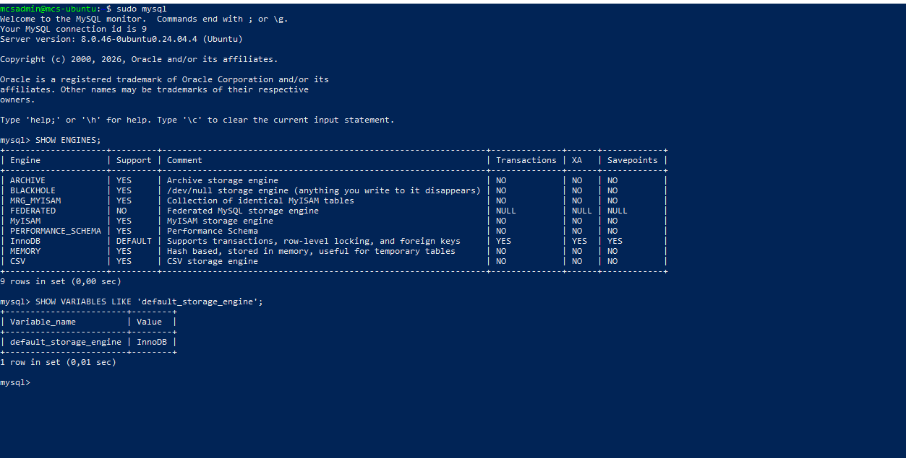
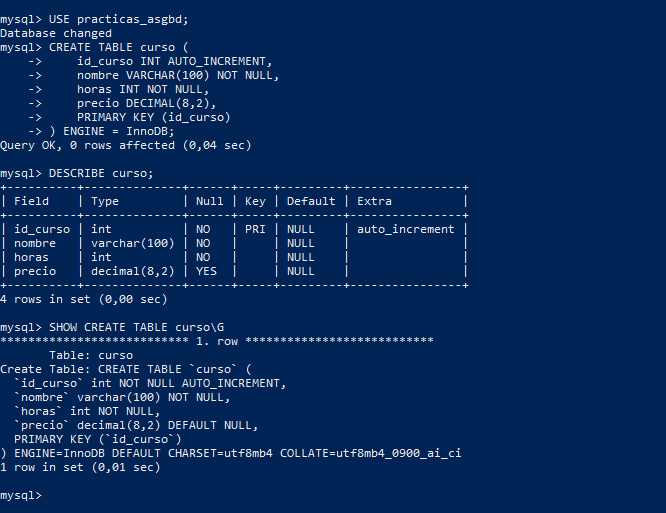
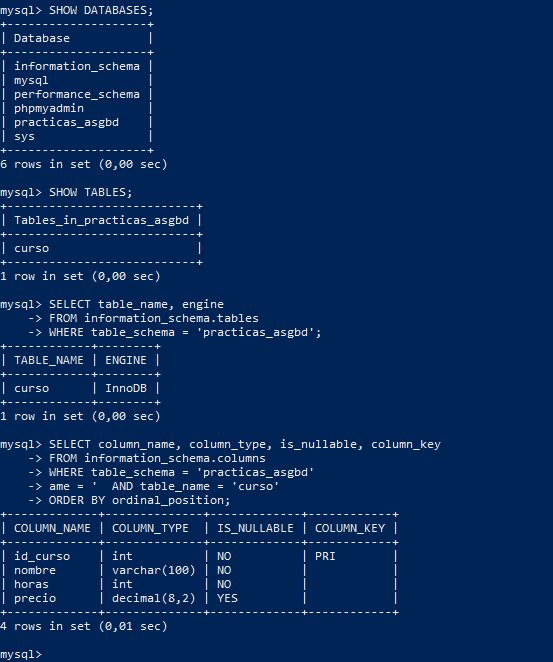
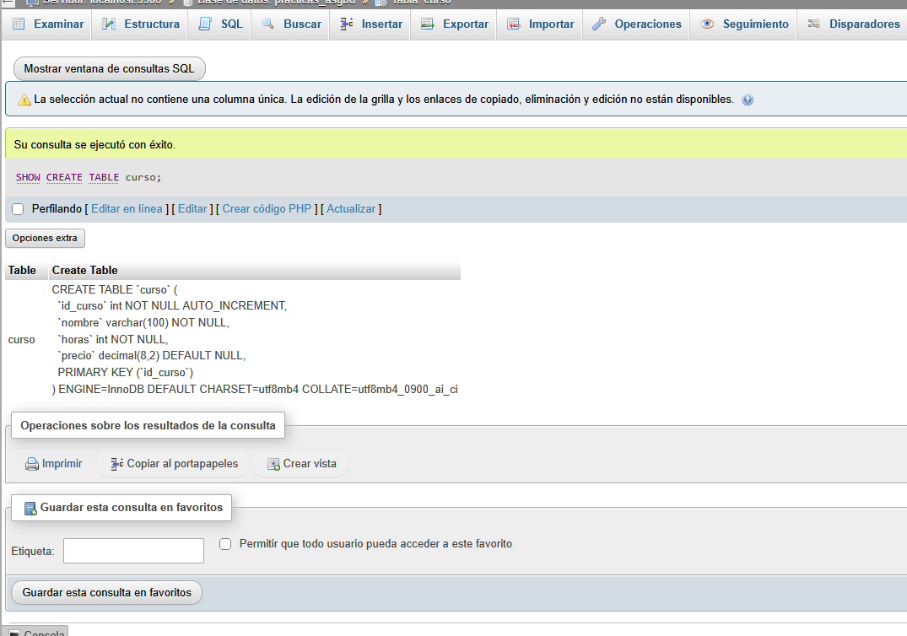

CONFIGURAR.
COMPROBAR.
Configuración y administración básica de MySQL
Configuración segura del servidor, motores de almacenamiento y diccionario de datos.
Punto de partida
Se utiliza el entorno de la actividad 1: Ubuntu, MySQL, Apache, PHP y phpMyAdmin, con la base practicas_asgbd y el usuario asgbd. No se repite la instalación. La práctica se ha realizado paso a paso. Se han preparado diez capturas que documentan las comprobaciones, los cambios de configuración y la tabla curso.
Estado inicial y versión
Comprobar el servicio y la versión instalada antes de cambiar nada.
systemctl is-active mysql
mysql --version
sudo mysql -e "SELECT VERSION();"
media/u1-a02-01-estado-version.PNGArchivo de configuración y copia de seguridad
Localizar my.cnf y mysqld.cnf. Crear la copia antes de modificar el archivo.
ls -l /etc/mysql/
sudo cat /etc/mysql/my.cnf
sudo cp -n /etc/mysql/mysql.conf.d/mysqld.cnf /etc/mysql/mysql.conf.d/mysqld.cnf.copia
ls -l /etc/mysql/mysql.conf.d/
media/u1-a02-02-archivo-copia.PNGValores iniciales
Consultar los parámetros actuales, incluido puerto, dirección de escucha y directorio de datos.
sudo mysql -e "SHOW VARIABLES WHERE Variable_name IN ('port','bind_address','max_connections','character_set_server','collation_server','datadir');"
media/u1-a02-03-valores-iniciales.PNGModificar la configuración
En la sección [mysqld], añadir o modificar los siguientes parámetros sin duplicarlos. Mantener el puerto y bind-address.
sudo nano /etc/mysql/mysql.conf.d/mysqld.cnf
# Dentro de [mysqld]:
max_connections = 100
character-set-server = utf8mb4
collation-server = utf8mb4_spanish_ci
media/u1-a02-04-configuracion.PNGValidar y reiniciar
Continuar con el reinicio solo si la validación termina sin errores y el código de salida es 0.
sudo mysqld --validate-config
echo $?
# Solo después de validar correctamente:
sudo systemctl restart mysql
systemctl is-active mysql
media/u1-a02-05-validacion-reinicio.PNGComprobar valores finales
Verificar que coinciden con 100, utf8mb4 y utf8mb4_spanish_ci.
sudo mysql -e "SHOW VARIABLES WHERE Variable_name IN ('max_connections','character_set_server','collation_server');"
media/u1-a02-06-valores-finales.PNGMotores de almacenamiento
Identificar InnoDB y el motor predeterminado.
sudo mysql
SHOW ENGINES;
SHOW VARIABLES LIKE 'default_storage_engine';
media/u1-a02-07-motores.PNGCrear y describir la tabla curso
Dentro de MySQL, seleccionar la base y crear la tabla solicitada. Documentar creación, estructura y motor.
USE practicas_asgbd;
CREATE TABLE curso (
id_curso INT AUTO_INCREMENT,
nombre VARCHAR(100) NOT NULL,
horas INT NOT NULL,
precio DECIMAL(8,2),
PRIMARY KEY (id_curso)
) ENGINE = InnoDB;
DESCRIBE curso;
SHOW CREATE TABLE curso;
SHOW TABLE STATUS LIKE 'curso';
media/u1-a02-08-tabla-curso.PNGDiccionario de datos
Consultar las tablas y columnas usando metadatos SQL.
SHOW DATABASES;
SHOW TABLES;
SELECT table_name, engine
FROM information_schema.tables
WHERE table_schema = 'practicas_asgbd';
SELECT column_name, column_type, is_nullable, column_key
FROM information_schema.columns
WHERE table_schema = 'practicas_asgbd'
AND table_name = 'curso'
ORDER BY ordinal_position;
media/u1-a02-09-diccionario.PNGComprobación en phpMyAdmin
Desde Windows se accede con asgbd, se selecciona practicas_asgbd y curso, y se ejecuta SHOW CREATE TABLE curso desde la pestaña SQL. Se activan Textos completos para mostrar las cuatro columnas, la clave primaria y ENGINE=InnoDB en una única captura.
http://127.0.0.1:8080/phpmyadmin/
-- En la pestaña SQL:
SHOW CREATE TABLE curso;
media/u1-a02-10-phpmyadmin.PNGEXAM MODE
| Concepto | Idea clave |
|---|---|
| Administración segura | Consultar → copiar → modificar → validar → reiniciar → verificar. |
| Configuración efectiva | El archivo expresa lo configurado; SHOW VARIABLES permite comprobar los valores que usa el servidor. |
| Juego de caracteres y collation | utf8mb4 representa caracteres; la collation establece reglas de comparación y ordenación. |
| InnoDB | Motor con transacciones, claves ajenas, bloqueo por fila y recuperación ante fallos. |
| SHOW / DESCRIBE / information_schema | Consultas administrativas rápidas / estructura de tabla / metadatos consultables mediante SQL. |
| Permisos existentes | asgbd ya tiene permisos sobre practicas_asgbd.* desde la actividad 1. No es necesario repetirlos si funcionan. |
Recuperación si el servicio falla
Este bloque es de contingencia: no se ejecuta si todo funciona correctamente.
sudo cp /etc/mysql/mysql.conf.d/mysqld.cnf.copia /etc/mysql/mysql.conf.d/mysqld.cnf
sudo systemctl restart mysql
systemctl status mysql --no-pager
journalctl -u mysql -n 50 --no-pagerResultados
El alumno ha completado los diez bloques de evidencias. Se ha localizado mysqld.cnf y creado su copia de seguridad antes de editarlo. Los parámetros establecidos son max_connections = 100, character-set-server = utf8mb4 y collation-server = utf8mb4_spanish_ci. El alumno confirmó que la validación terminó con código 0 y continuó con el reinicio y la comprobación de los valores finales.
Se ha creado la tabla curso con cuatro columnas: id_curso, nombre, horas y precio. La captura final revisada muestra id_curso como clave primaria con AUTO_INCREMENT, nombre y horas obligatorios, precio DECIMAL(8,2) y ENGINE=InnoDB. Se han consultado los metadatos mediante information_schema y comprobado la definición desde phpMyAdmin.
Collation del servidor y de la tabla
La captura final muestra que curso utiliza utf8mb4_0900_ai_ci. La collation de una tabla puede heredarse de la base de datos existente, por lo que no tiene que coincidir con el nuevo valor predeterminado del servidor. La comprobación de collation_server corresponde a la captura de valores finales; no se ha cambiado la collation de la base ni de la tabla.
Recuperación
Los comandos de restauración anteriores se documentan como recurso de contingencia, no como una incidencia realizada durante la práctica.